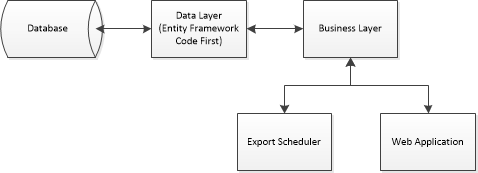

Crossrail JV
Observation Form
View the Project on GitHub csjv/crossrail-jv-observation-form
View the Application Documentation
Hosting Documentation
Introduction
Prerequisites
Before starting, it assumed the reader has some knowledge of the following systems and applications and has them installed following the guidelines for installation:
- Windows Server 2008 R2 +
- Internet Information Services (IIS) 7.5 +
- Microsoft SQL Server 2008 R2 SP2
- ASP.NET 4.5 +
Set-up
IIS
The compiled application should be hosted within an IIS ASP.NET v4.0 (minimum) environment. The application can be run at the root of a site or within a sub application if required.
SQL
The application will require a standard SQL 2008 R2 or SQL 2012 installation and following this a database creating for the application. Another database will also be required for the elmah error logging.
When the “Crossrail.ObservationForm.Mvc” application is first run, the application database will be populated with the static data required.
Hosted Architecture
The following architecture displays how the observation form is provided with in its hosting environment.

Hardware Requirements
The following requirements assume the hosting agent is providing both the web platform and the SQL platform from the same hardware. Minimum reccomendations for both the operating system and SQL Server software can be found within the respective documentation.
Processor—Processor performance depends not only on the clock frequency of the processor, but also on the number of processor cores and the size of the processor cache. The following are the processor requirements:
- Minimum: 1 GHz (for x86 processors) or 1.4 GHz (for x64 processors)
- Recommended: 2 GHz or faster
RAM—The following are the RAM requirements:
- Minimum: 2 GB
- Recommended: 4 GB or more
Disk space requirements—The following are the approximate disk space requirements assuming the system and data partitions reside on the same disk:
- Minimum: 60 GB
- Recommended: 80 GB or more
Error Logging
All error logging for the web application and exporter is configured to use Elmah. More information about Elmah can be found at the project homepage: https://code.google.com/p/elmah/
To configure Elmah for deployment you will have to create a database for the error log that can be shared across all applications on your web server. The script to create the database can be found here: ELMAH-1.2-db-SQLServer.sql
It is also recommended that your web.config transform for deployment re-instates the Elmah error log. More information can be found in the web application web.config.